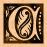

|
 oncerning the Old
Ones, it is written, they wait ever at the Gate. and the Gate is all
places at all times, for They know nothing of time or place but are in all
time and in all place together without appearing to be, and there are
those amongst Them which can assume diverse Shapes and Features and any
given Shape and any given Face and the Gates are for Them everywhere, but
the first. was that which I caused to be opened, namely in Irem, the City
of Pillars, the City under the Desert, but wherever men sayeth the
forbidden Words, they shall cause there a Gate to be established and shall
wait upon Them Who Come through the Gate, even as the Dhols, and the
Abominable Mi-Go, and the Tcho-Tcho people, and the Deep Ones, and the
Gugs, and the Gaunts of the Night and the Shoggoths and the Voormis, and
the Shantaks which guard Kadath in the Cold Waste and the Plateau of Leng.
All are alike the Children of the Elder Gods, but the Great Race of Yith
and the Great Old Ones failing to agree, one with another, and both with
the Elder Gods, seperated, leaving the Great Old Ones in possession of the
Earth, while the Great Race, returning from Yith took up Their Abode
forward in Time in Earth-Land not yet known to those who walk the Earth
today, and there wait till there shall come again the winds and the Voices
which drove Them forth before and That which Walketh on the Winds over the
Earth and in the spaces that are among the Stars forever. |
 f The Old Ones and the Gates
f The Old Ones and the Gates
 The Coming-Down of the Old
Ones The Coming-Down of the Old
Ones |
Ye
Old Ones and Elements  |